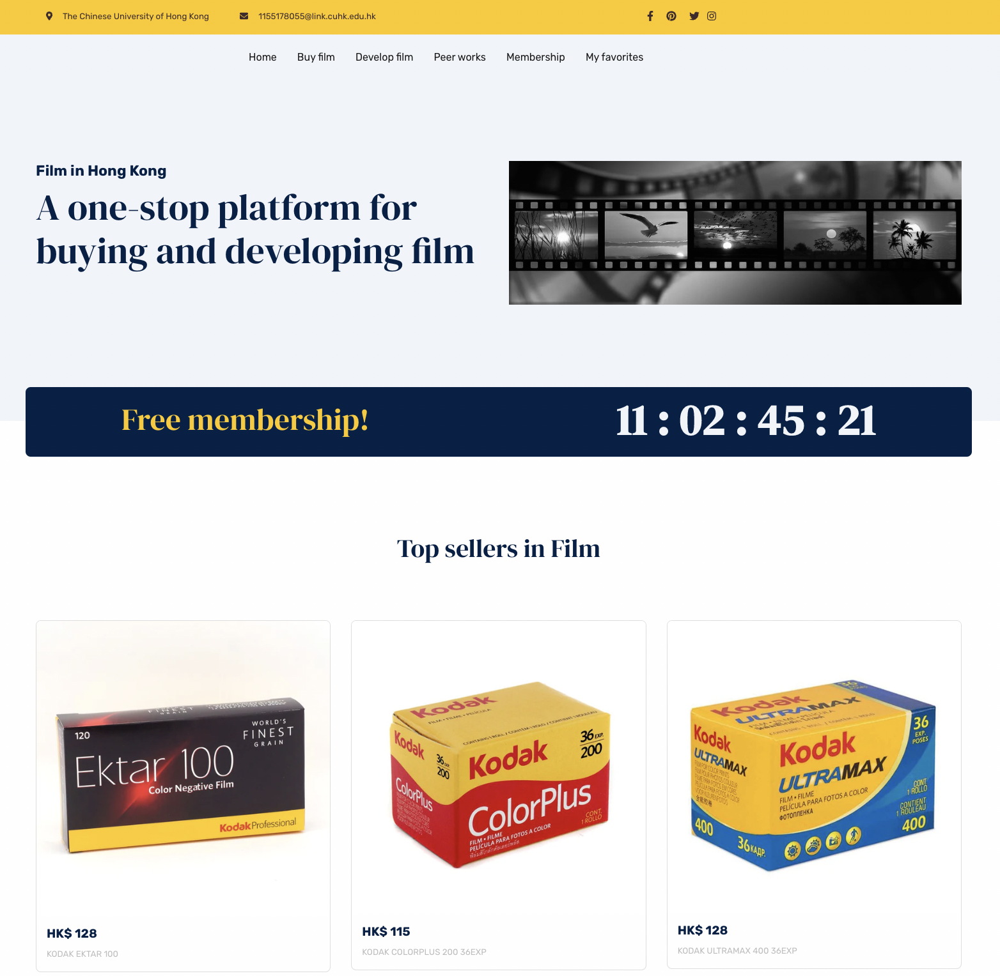

Assignment 5 - Film in HK
Scroll down for more information.
Scroll down for more information.
Film in HK is a collective platform of film services based in Hong Kong. And it offers a variety of services such as film purchase, film development, exhibition of peer works, and offline photography events. A differentiated membership system is also employed on this website.
These are the seven stages of my website development: identify problems, insight into opportunity, user research, modify ideas, build website, improve usability, and finally a/btest to increase revenue.
This time I modified my ideas and made several improvements. First I emphasize more on the attracting price, in the purchasing page I marked the discounted price of each roll of film to attract users to buy a membership. And I provide free trial membership to cultivate users’ habits and a better annual membership price to encourage them to buy. Finally, I abandoned useless functions like photo shoot location recommendation.
And I further use a/btest to investigate if a homepage banner will help increase the clicks to membership page and increase people’s desire to buy membership. In the original version I put a banner at a prominent position on the home page, and I remove this banner in the b version. It will take google optimizer 2 weeks to return the result so I will make corresponding modifications after that.
And if you're interested, you can click here to visit my website.
